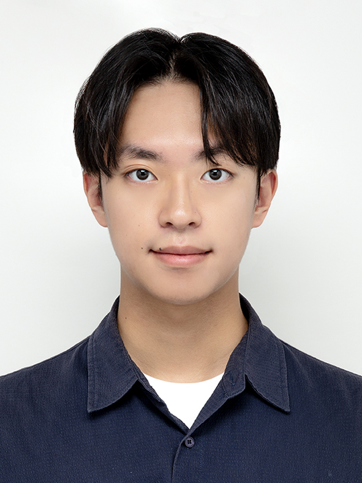

khhandrea at kaist dot ac dot kr
I am a master's student in the Robotics Program at Korea Advanced Institute of Science and Technology (KAIST), advised by Prof. Chang D. Yoo. I am also a member of the Artificial Intelligence & Machine Learning (U-AIM) Lab.
My research interests lie in reinforcement learning, robot learning, and representation learning. I am broadly interested in building artificial intelligence that can perceive, reason, and act in the physical world in a life-like manner.
I received my B.S. in Computer Science and Engineering from Konkuk University, Seoul, South Korea, in 2025.
CV / Google Scholar / GitHub / LinkedIn / ORCID

- 06/2026: One paper has been accepted to IROS 2026.
- 05/2026: One paper has been accepted to ICML 2026 as an
Oral presentation.
-
Intelligent Robotic System using Continual Learning and Multimodal Language Model based Multi Attribute Feedback (Operator)
National Research Foundation of Korea (NRF) grant funded by the Korea government (MSIT): Aug. 2025 - present
- M.S. Student, Robotics Program, KAIST, 2025 - Present
- B.S., Computer Science and Engineering, Konkuk University, GPA: 4.20/4.5 (Top 3%), 2021 - 2025
- KAIST-Hwaseong Science Hub AI Specific Education Program: 2026 Summer, 2026 Spring
- Electronics Design Lab <AI for Robot Intelligence: Perception, Planning and Control>: 2025 Fall, 2026 Spring
- International Conference on Acoustics, Speech & Signal Processing (ICASSP): 2025